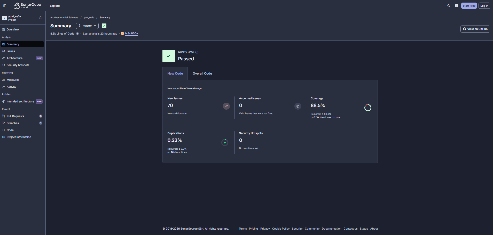
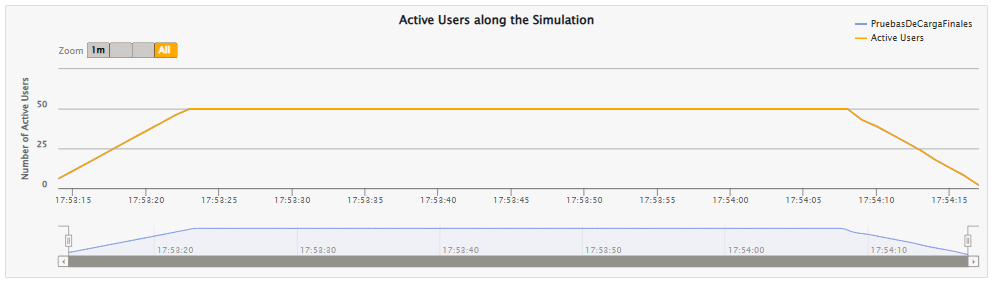
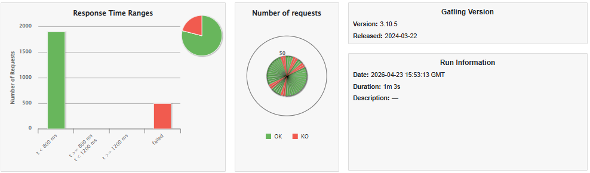
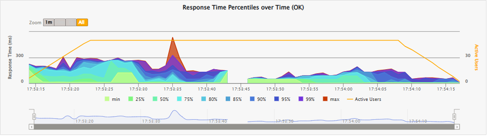
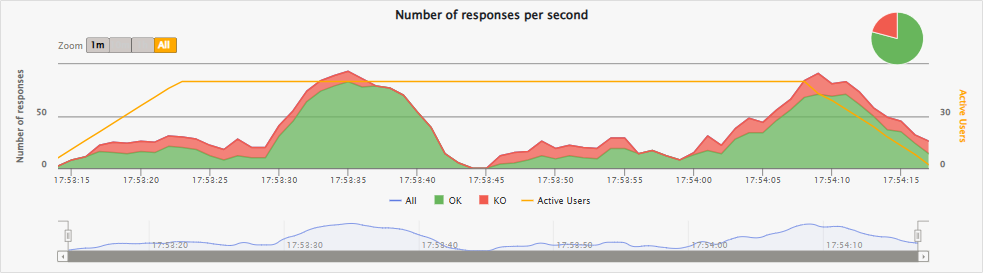
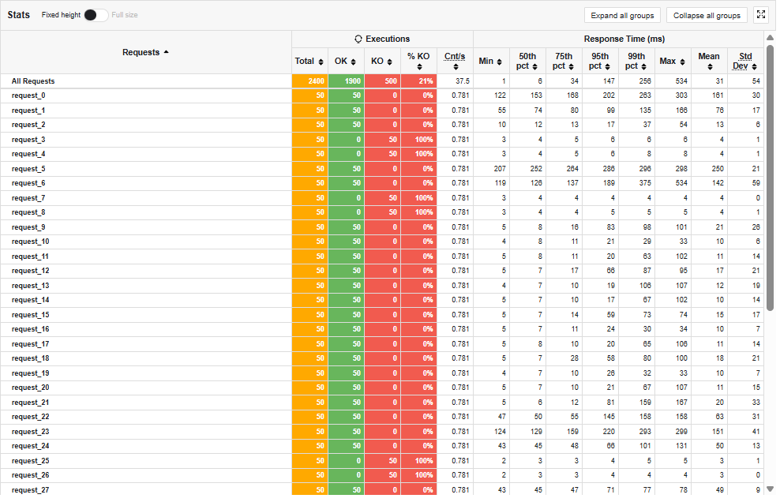
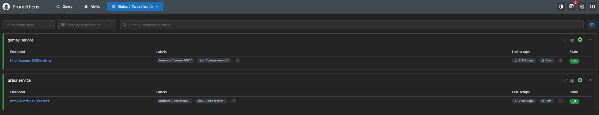
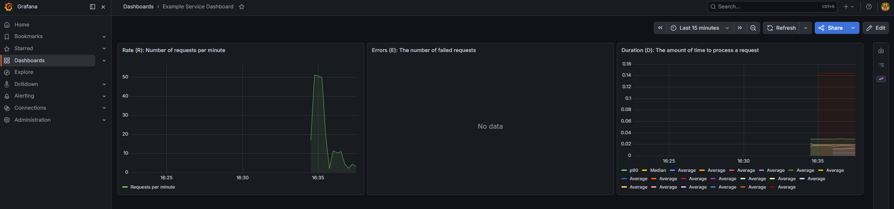
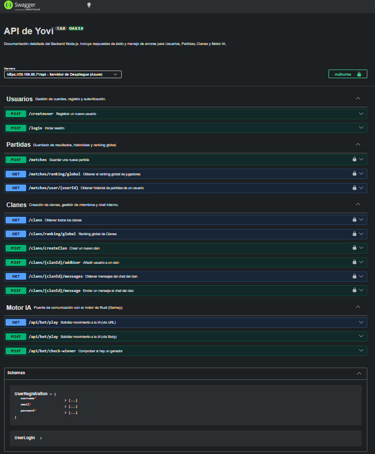
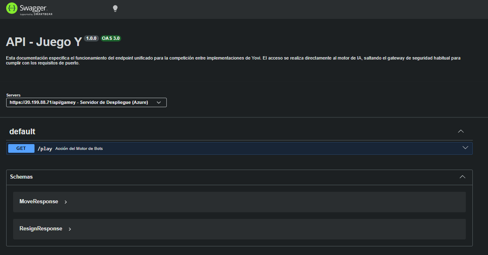

About arc42
arc42, the template for documentation of software and system architecture.
Template Version 3.0 EN. (based upon AsciiDoc version), April 2026
Created, maintained and © by Dr. Peter Hruschka, Dr. Gernot Starke and contributors. See https://arc42.org.
1. Introduction and Goals
The video game development company Micrati has decided to begin developing a web-based system where users can play Game Y, an existing strategy board game. The initial idea is to offer an entertaining and intuitive experience. It will also provide various strategies with different difficulty levels to capture users' interest, as well as an online multiplayer experience.
The main requirements of the system are:
-
Game mechanics: Provide a functional version of the strategy game with a variable hexagonal board, including advanced game controls such as undo moves, skip turns, and surrender.
-
Platform: Available as a web application.
-
Game modes: Offer multiplayer capabilities, as well as a single-player mode against a bot and against another player on the same machine.
-
AI integration: The computer bot must be integrated via an external API (Rust engine) offering different strategies and difficulty levels.
-
User management: Allow users to securely register, log in, and manage their profiles.
-
Analytics & history: Allow users to view their personal game history, win/loss statistics, and a global ranking of all players in the system.
1.1. Quality Goals
The top three (max five) quality goals for the architecture whose fulfillment is of highest importance to the major stakeholders. We really mean quality goals for the architecture. Don’t confuse them with project goals. They are not necessarily identical.
Consider this overview of potential topics (based upon the ISO 25010 standard):

You should know the quality goals of your most important stakeholders, since they will influence fundamental architectural decisions. Make sure to be very concrete about these qualities, avoid buzzwords. If you as an architect do not know how the quality of your work will be judged…
A table with quality goals and concrete scenarios, ordered by priorities
| Quality goal | Description |
|---|---|
Usability & accessibility |
The system should be intuitive for users to learn and play. It must include clear UI feedback and consider basic accessibility standards so a wider range of users can enjoy the experience. |
Availability (Web) |
The application must be highly available and easily accessible via a web browser without requiring local installations by the end-user. |
Interoperability |
The core backend must be able to seamlessly communicate with external microservices, specifically the external Rust-based API engine that calculates the bot’s movements. |
Performance |
The app should respond to user requests (especially AI move calculations and database queries) within a reasonable timeframe. This prevents users from abandoning the app and ensures a smooth gameplay experience. |
Maintainability |
The system should be easy to maintain and extend. This is achieved by following good programming practices (Clean Code, JSDoc), modularizing components (e.g., React Modals, CSS variables), and using containerization (Docker). |
Security |
The private data and credentials of registered users must be kept safe, securely stored in the database, and authenticated correctly. |
1.2. Stakeholders
| Role/Name | Contact | Expectations |
|---|---|---|
Development team |
José Iván Díaz Potenciano uo302531@uniovi.es - Adrián Gutiérrez García uo300627@uniovi.es - Fernando Remis Figueroa uo302109@uniovi.es - Hugo Carbajales Quintana uo300051@uniovi.es - Sergio Argüelles Huerta uo299741@uniovi.es |
Responsible for developing the assigned application using good techniques, working properly as a team, and achieving a solution that is as maintainable and usable as possible. |
Users |
Application users |
Having a good experience using the application, where they can play the game using different strategies and check their statistics. |
Micrati |
Micrati company |
Expects to obtain an application that aligns with its ideas and objectives. |
Professor of the ASW subject |
Jose Emilio Labra Gayo - labra@uniovi.es |
Assume the role of Product Owner, defining high-level requirements, providing feedback to the development team, and evaluating the developed product. |
2. Architecture Constraints
2.1. Technical constraints
| Constraint | Explanation |
|---|---|
React, TypeScript & Vite |
The frontend must be developed using React and TypeScript, utilizing Vite as the fast build tool and development server. |
Node.js & Express |
The backend and user management services will be implemented using Node.js and Express. |
MongoDB |
The persistence layer for user profiles, match history, and global statistics must be implemented using MongoDB. |
WebSockets (Socket.io) |
Real-time multiplayer synchronization, game status updates, and clan chat must be managed via WebSockets using Socket.io. |
Rust game engine |
The core logic and AI for the "Game of Y" must be implemented in Rust to ensure maximum computational performance. |
Docker |
The entire system (frontend, backend, database, and Rust engine) must be containerized using Docker and orchestrated with Docker Compose. |
GitHub actions |
CI/CD pipelines must be managed using GitHub Actions for automated testing, building, and deployment. |
Deployment environment |
The system must be deployed and fully operational on a Microsoft Azure virtual environment, accessible via public IP/domain. |
Quality gates & metrics |
Code quality, security hotspots, and test coverage must be continuously analyzed using SonarQube, maintaining an acceptable threshold of code coverage. |
Testing frameworks |
The project must include robust testing layers, implementing unit, integration, and end-to-end testing (E2E). |
YEN Notation |
Game moves and state representation must strictly follow the standard YEN (Y-Game Extended Notation). |
2.2. Organizational constraints
| Constraint | Explanation |
|---|---|
Team size and roles |
The team consists of 5 members: José Iván, Adrián, Fernando, Hugo, and Sergio. Responsibilities are distributed across full-stack development and documentation. |
Timeframe and deadlines |
The project is bound by the academic semester schedule. It must be fully tested, documented, and deployed before the final subject submission. |
Methodology and meetings |
The team follows an iterative, Agile-based approach. Weekly meetings are held during laboratory sessions to track progress, with meetings throughout the week to resolve blockers. |
Version control and tracking |
GitHub is the mandatory platform for repository hosting, version control, and issue tracking (using GitHub Projects/Issues). |
2.3. Political and convention constraints
| Constraint | Explanation |
|---|---|
Arc42 Architecture |
The software architecture documentation must strictly follow the Arc42 template structure to ensure consistency and readability. |
Language |
The documentation must be written in English, adhering to international software engineering standards. |
Coding standards |
The team must adhere to Clean Code principles and security best practices (e.g., environment variables for secrets, strict CORS policies). |
Conventional commits |
All repository commits must follow the Conventional Commits specification (or at least must be clear enough) to maintain a clean and semantic project history. |
3. Context and scope
3.1. Business context
Diagram elements:
-
User: The end-user who interacts with the web application to play games (against bots or other players in real-time) and manage their profile.
-
Administrator: The technical user responsible for overseeing the system’s stability and performance via the internal monitoring dashboards and verifying API specifications via Swagger.
-
Bot (AI): Conceptual actor representing the internal artificial intelligence engine that plays against the user.
-
Tournament script (External bot): An external automated script that interacts directly with the system’s game engine to evaluate performance and play matches during competitive tournaments, bypassing standard user interfaces.
-
Yovi: The complete system boundary. It acts as a unified solution that encapsulates the game engines, real-time communications, user management, data persistence, and the observability infrastructure.
3.2. Technical context
The Yovi system operates behind a reverse proxy that acts as the single point of entry, providing secure interfaces for external communication and managing a private Docker bridge network (monitor-net) for internal microservices. The communication channels are detailed below:
-
External access interfaces (Public):
-
Nginx reverse proxy and TLS termination: Binds to ports
80(redirects to HTTPS) and443(SSL). It uses configured certificates (cert.pem,key.pem) to encrypt all traffic from Users and Gatling load tests. -
Frontend delivery (
/): Nginx routes root traffic to thewebappcontainer (port 80) to serve the React Single Page Application. -
API documentation interfaces (Swagger):
-
Endpoints documentation (
/api-docs/endpoints): Serves the main OpenAPI specification for user and match management. -
Tournament API documentation (
/api-docs/api): Serves the specific specification for the competition engine.
-
-
Node.js user and bot API (
/api/,/api/bot/,/api/matches/): Handled by theusersservice on internal port3000. This includes authentication, user stats, and the application’s logic motor controller -
Rust game API (
/api/gamey/): Routed to thegameyservice on internal port4000for complex game mechanics calculation. -
Real-time multiplayer (
/socket.io/): Nginx upgrades HTTP connections to WebSockets and routes them to themultiplayerservice on internal port5000. -
Tournament and evaluation interface (Direct Port): An exposed port (
3002) mapped directly to the internalgameyservice port (4000). This completely bypasses Nginx to provide a direct, low-latency HTTP communication channel for external tournament scripts.
-
-
Internal interfaces (Private
monitor-netnetwork):-
Microservice communication: The
usersservice communicates directly with thegameyservice using the internal Docker DNS (http://gamey:4000) defined via theRUST_API_URLenvironment variable. -
Monitoring and observability: Prometheus (exposed on port
9090) scrapes metrics from the internal services. Grafana (exposed on port9091) queries Prometheus to build visual dashboards accessed by the Administrator. -
Data persistence: The users service connects securely via TLS to MongoDB Atlas, an external cloud-hosted database, to persist user profiles, match history and clan data. The gamey and multiplayer services do not access the database directly — any persistence they require is delegated to the users service via internal HTTP calls.
-
4. Solution Strategy
4.1. Technology Decisions
4.1.1. Continuous deployment (GitHub Actions)
Beyond automated testing, we implemented a full Continuous Deployment (CD) pipeline. Upon publishing a GitHub Release, a workflow automatically connects to the Azure VM via SSH to pull the latest images and restart the services. Quality goals: deployability, maintainability, reliability. Key constraints: Requires secure management of SSH keys using GitHub Secrets to prevent unauthorized server access.
4.1.2. Frontend
We chose React combined with TypeScript for the user interface development. React’s component-based architecture is ideal for modularizing the complex visualization of the game board and managing the reactive state of the match. The adoption of TypeScript adds a static typing system that drastically reduces compile-time errors. Quality goals: usability, maintainability, robustness. Key constraints: The system must be accessible from any modern web browser, managing communication with the backend asynchronously via JSON and WebSockets.
4.1.3. Backend (Microservices)
For the backend, we adopted a polyglot microservices approach:
1. Rust (gamey): Offers native performance and memory safety, guaranteeing low and predictable response times for the complex algorithmic logic of the game and AI bots.
2. Node.js (users): Excellent for creating fast REST APIs to manage user registration, authentication (JWT), and database interactions.
3. Node.js (multiplayer): A dedicated service handling WebSocket connections to ensure low-latency gameplay.
Quality goals: interoperability, scalability, and robustness.
Key constraints: The Rust engine is restricted to using the strict YEN string format as the contract for game states.
4.1.4. Real-Time communication (WebSockets)
We selected Socket.io over standard HTTP polling for multiplayer interactions. Socket.io maintains a persistent, bi-directional TCP connection, allowing the server to push moves to opponents instantly. It also provides built-in "Rooms," which drastically simplifies the logic for matchmaking and isolating 1vs1 games. Quality goals: low latency, real-time performance, efficiency. Key constraints: Requires a stateful connection, demanding a dedicated microservice to manage memory overhead effectively.
4.1.5. API Gateway & security
We implemented Nginx as a Reverse Proxy and API Gateway. Instead of exposing multiple microservice ports to the internet, Nginx provides a single, secure entry point (Port 443). It handles SSL/TLS termination, hiding the internal complexity of the Docker network and routing traffic to the correct service based on the URL path. Quality goals: security, isolation, parity between Dev/Prod environments. Key constraints: All external traffic must be encrypted via HTTPS using SSL certificates.
4.1.6. Database
We chose MongoDB Atlas (Cloud NoSQL) as our primary database. Its document-oriented structure perfectly complements Node.js and React. This allows us to achieve agility when evolving game data structures without migrating rigid SQL tables, and ensures high availability in the cloud. Quality goals: agility in development, high availability, speed of response. Key constraints: Must store varied game data without a fixed structure while securing user credentials.
4.1.7. Containers and cloud deployment
Docker and Docker Compose were selected to containerize the services. This guarantees absolute consistency between local development machines and our Azure Virtual Machine production environment. It isolates dependencies (Node vs. Rust) and allows us to define the entire infrastructure as code.
Quality goals: portability, deployability, reproducibility.
Key constraints: The host environment (Azure VM) must run a Docker engine to orchestrate the internal monitor-net bridge network.
4.1.8. Monitoring
We chose the combination of Prometheus and Grafana. Prometheus acts as a time-series database scraping technical metrics from the backend, while Grafana visualizes this data on real-time dashboards.
Quality goals: observability, performance validation.
Key constraints: Services must expose metrics at a standard /metrics endpoint.
4.1.9. Modeling & version control
-
PlantUML: Ensures agile, version-controllable, and consistent UML diagrams purely from text.
-
GitHub: Centralizes code, manages parallel development via branches, and enforces quality through mandatory Pull Requests.
4.2. High-level Decomposition
4.2.1. High-Performance bot interface
We exposed a secondary direct port (3002) for the Rust gamey service. This bypasses the Nginx API Gateway specifically for external competition scripts and automated evaluation tools.
Quality goals: efficiency, interoperability.
Key constraints: Only the /play endpoint is exposed on this port to meeting tournament requirements.
4.2.2. Microservices architecture
We divided the backend into autonomous services (users, gamey, multiplayer). This decouples user management, real-time networking, and game logic. If the user service experiences high load, the multiplayer game loop remains unaffected.
Quality goals: modifiability, scalability, technological independence.
Key constraints: Services run in isolated containers, communicating solely over the internal Docker network.
4.2.3. API gateway pattern
Nginx acts as the facade for the system. Clients do not know if they are talking to Rust or Node.js; they simply send requests to the Nginx gateway, which routes /api/gamey/ to Rust, /socket.io/ to the multiplayer service, and /api/ to the users service. Additionally, the backend implements dynamic CORS (Cross-Origin Resource Sharing) strategies via environment variables, ensuring that production endpoints only accept traffic from the gateway’s IP, while remaining flexible for local development.
Quality goals: security, simplicity for clients, parity between Dev/Prod environments.
4.2.4. Single page application (SPA)
The React frontend separates the presentation layer from business logic. By loading once and updating dynamically via WebSockets and REST, it offers a fluid, app-like experience. Quality goals: usability, interoperability.
4.2.5. Hybrid communication: REST & Event-Driven
We use a dual approach: * REST (HTTP/JSON): Used for stateless, transactional operations (e.g., login, fetching match history, requesting an AI move). * Event-Driven (WebSockets): Used for stateful, real-time synchronization during active gameplay, pushing events to clients instantly. Quality goals: low latency, appropriate tool for the job.
4.3. Strategies for Quality Goals
| Quality Goal | Scenario | Solution Strategy |
|---|---|---|
Performance (Real-time) |
Players need to see their opponent’s move instantly to maintain the flow of the game. |
WebSockets (Socket.io): A persistent bi-directional connection pushes updates in milliseconds, avoiding HTTP overhead. |
Performance (Computation) |
The game requires complex AI calculations without freezing the server. |
Rust Engine: We use Rust to process complex moves instantly and return the result. |
Security |
The system must prevent unauthorized access and protect data in transit. |
Nginx & JWT: Nginx enforces HTTPS (SSL Termination) and acts as a shield. The Node.js middleware validates JWT tokens before allowing access to private APIs. |
Interoperability |
Frontend (TypeScript), User Service (Node.js), and Engine (Rust) must exchange data. |
JSON standard: Strict use of the YEN notation as a universal data contract, avoiding language-specific binary formats. |
Modifiability |
The team needs to update the multiplayer logic without breaking the login system. |
Microservices: Strict separation of concerns. Services are isolated containers; changing one does not require redeploying the others. |
Usability |
Players expect a fluid experience without page reloads. |
React SPA: The interface updates dynamically based on incoming WebSocket events. |
Robustness / Availability |
A container crashes, or a server reboots. |
Docker Restart Policies & Atlas: Docker automatically revives crashed containers. MongoDB Atlas ensures database high availability outside the main VM. |
Observability |
Developers need to identify why a move failed or a server is slow. |
Prometheus & Grafana: Services expose metrics. Grafana dashboards visualize this data in real-time. |
Portability |
Developers need to replicate the exact Azure production environment locally. |
Docker Compose: All infrastructure is defined as code, mimicking the cloud setup locally with a single command. |
Deployability |
The team needs to push a bug fix to the Azure production server instantly. |
Automated CD Pipeline: GitHub Actions orchestrates an automated workflow upon a new Release. It injects production secrets dynamically, connects via SSH to the Azure VM, pulls the latest code, and orchestrates container recreation using Docker Compose without manual intervention. |
Interoperability (Tournament) |
An external evaluation script needs to request moves from the bot via a specific port (3002). |
Direct Port Mapping: Docker maps port 3002 directly to the Rust engine, providing a standard, high-speed interface for third-party scripts. |
4.4. Organizational decisions
To organize ourselves well and ensure work proceeds without issues, we have agreed upon the following team rules.
4.4.1. Code and task management (GitHub)
-
Main Branch (master): The master branch always contains the definitive and functional version of the project. We only add changes here when we are sure they work well.
-
Work Organization: We use GitHub Projects tools to assign work and see what remains to be done. This way, we all know what everyone is working on.
-
Meeting Documentation: We use the GitHub Wiki to store the minutes of our meetings. This creates a record of what we decide each week.
4.4.2. Quality control
-
Code Reviews: To avoid errors, we have decided that no one can upload code to the main branch without another colleague reviewing it first.
-
Goal: This serves two purposes: avoiding silly mistakes and ensuring everyone understands everyone else’s code, so that no one becomes indispensable in a specific part of the application.
4.4.3. Automated quality assurance
We integrated Static Analysis (SonarCloud) and Automated Testing (Unit & E2E) into the CI pipeline. No code reaches the production environment unless it passes the full test suite (Node.js, Rust) and meets the quality gate defined in SonarCloud.
4.4.4. Communication
-
Weekly meetings: We meet once a week (in person during laboratory classes) to see what progress we have made and plan the following week’s tasks. This is when we discuss important design decisions.
-
WhatsApp and discord: We use these groups for quick day-to-day questions. If someone gets stuck programming, they ask for help here to solve it quickly without having to wait for the weekly meeting.
5. Building Block View
5.1. Whitebox overall system (Level 1)
The following diagram shows the main high-level subsystems of the Yovi System and how they interact to serve both standard users and automated tournament scripts.
- Motivation
-
The system follows a modular, decoupled architecture. Instead of a monolith, it is split into a static frontend, a cluster of backend microservices, and a persistent database, all shielded by a single reverse proxy gateway. This ensures security, scalability, and allows multiple entry points (e.g., standard UI vs. direct Tournament API).
- Contained building blocks
| Name | Responsibility |
|---|---|
API gateway |
Acts as the single point of entry, handles SSL termination, and routes traffic to the correct internal block (Frontend or Backend). |
Frontend SPA |
Client-side application running in the user’s browser, responsible for the UI and UX. |
Backend microservices |
A collection of internal APIs that handle user authentication, real-time multiplayer networking, heavy game logic, and serve the OpenAPI documentation. |
Data persistence |
The MongoDB database cluster that securely stores user profiles, encrypted passwords, and match statistics. |
5.2. Level 2: Backend services decomposition
This level zooms into the "Backend Microservices" building block, detailing the distinct autonomous services that handle users, real-time gameplay, heavy AI computation, and API documentation.
- Motivation
-
To achieve high availability and separation of concerns, the backend is not a single server. Heavy AI calculations (Rust) are isolated from real-time socket connections (Multiplayer) and standard HTTP REST traffic (Users). Furthermore, by embedding Swagger UI within the Users Service, we provide live API documentation without needing an extra container.
- Contained building blocks
| Building block | Description |
|---|---|
Users service and swagger UI |
Responsibility: Manages user registration, JWT authentication, and historical statistics retrieval. It acts as a standard REST API and natively serves the OpenAPI specifications ( |
Multiplayer service |
Responsibility: Maintains stateful, real-time WebSocket connections with active players, managing game rooms and broadcasting piece movements instantly. It does not access MongoDB directly — match result persistence is delegated to the Users service via internal HTTP calls using a machine-to-machine authentication header ( |
GameY engine |
Responsibility: Implements the core logic of the Game of Y, validating moves and checking win conditions using YEN notation. It exposes two distinct ports: Port 4000 for internal communication (routed via Nginx at |
MongoDB |
Responsibility: The central database used to persist user profiles, encrypted credentials, and global ranking statistics. Only the Users service connects to it directly. |
6. Runtime View
This section displays sequence diagrams illustrating the interaction of the system’s components across the most architecturally relevant scenarios. Based on the frontend’s Tablero logic, the system supports three distinct gameplay modes (humano, bot, and online), each with a unique architectural flow.
6.1. 1. Local 1 vs 1 match (human mode)
In this mode, two human players compete on the same physical device. Real-time WebSockets are not required. Instead, the React frontend manages the turn progression and queries the backend solely to validate if the current board layout results in a victory after each move.
6.2. 2. Game Lifecycle Against the Computer (PvE / "bot" mode)
This diagram illustrates the single-player workflow. The frontend maintains the game state, validates win conditions after each move (both human and bot), and delegates the heavy AI computation to the isolated Rust Game Engine through the Nginx Gateway.
6.3. 3. Real-time Multiplayer Match (PvP / "online" mode)
This diagram details the WebSocket communication used for real-time multiplayer games. The system utilizes an explicit Room-based matchmaking approach. For normal game endings, match result persistence is handled by the frontend via the statsService. For player disconnections, the Multiplayer Service acts as the arbiter and persists the result via a secure machine-to-machine (M2M) call to the Users API.
6.4. External Bot Evaluation (Tournament API)
Apart from the standard frontend modes, the system provides a direct, high-performance interface for external tournament evaluations. This bypasses the Nginx gateway and Node.js layers, interacting directly with the Rust engine via port 3002.
6.5. User Registration Workflow
This diagram illustrates the registration flow. The Users API validates whether the user already exists before storing the new account, and hashes the password using Bcrypt before persisting it to MongoDB Atlas.
7. Deployment View
7.1. Infrastructure Level 1
Overview Diagram
- Motivation
-
Yovi supports two deployment environments through a single, dynamic
docker-compose.ymlfile, leveraging default environment variables (e.g.,${NODE_ENV:-development}) to adapt seamlessly:-
Local development: The system can be executed on any machine with Docker installed using
docker compose up. TLS certificates are generated locally with mkcert for HTTPS on localhost. CORS policies are relaxed by default. -
Production (Azure VM): The system is deployed on a Microsoft Azure Virtual Machine (IP: 20.199.88.71) via an automated GitHub Actions pipeline. All end-user traffic is securely routed through Nginx over HTTPS (port 443). Persistent data is stored in MongoDB Atlas (cloud-hosted). This environment also exposes port 3002 directly to the GameY engine for external tournament scripts.
-
- Quality and/or Performance Features
-
-
Security: All client-server communication is encrypted via HTTPS (TLS). Nginx is the single public entry point, hiding internal service ports.
-
Modularity: Each service is deployed as an independent container, allowing isolated development and replacement.
-
Portability: The deployment can be reproduced consistently on different machines that support Docker.
-
Observability: Prometheus and Grafana enable robust monitoring of the backend services.
-
Availability: Critical containers enforce the
restart: unless-stoppedpolicy, ensuring automatic recovery after unexpected crashes or VM reboots. -
High-Performance tournament interface: The
gameycontainer has an explicit port mapping (3002:4000). This creates a direct channel from the Azure host to the Rust engine, optimizing latency for external evaluation scripts.
-
- Mapping of Building Blocks to Infrastructure
| Building Block | Infrastructure Element |
|---|---|
Web Browser |
Runs on the client side. In local development, the user accesses the application via HTTPS at https://localhost. In production, the application is accessible via the Azure VM public IP at https://20.199.88.71. |
Nginx (Reverse Proxy) |
Container deployed on the Docker Host. Acts as the single HTTPS entry point, routes requests to internal services based on URL path, and terminates TLS. |
WebApp |
Container deployed on the Docker Host, serving the React SPA. |
Users Service |
Container deployed on the Docker Host. Acts as the primary backend logic controller and the sole manager of the database persistence layer. |
GameY Service |
Container deployed on the Docker Host. It is accessible via Nginx (port 443) for standard web users and directly via port 3002 for tournament bot interactions. |
Multiplayer Service |
Container deployed on the Docker Host. Manages real-time online game sessions via WebSockets (Socket.io) and delegates match persistence to the Users Service. |
MongoDB Atlas |
Cloud-hosted database (external to the Docker Host). Stores user data, match history, and clan information. Accessed securely over TLS exclusively by the Users Service. |
Prometheus & Grafana |
Containers deployed on the Docker Host to scrape and visualize metrics respectively. |
7.2. Infrastructure Level 2
7.2.1. Docker Host
This diagram zooms into the Docker Host and the internal Docker network. Nginx is the entry point for all traffic and routes requests to the correct service. WebApp serves the frontend assets. Users Service handles business logic and acts as the sole bridge to MongoDB Atlas. The Multiplayer Service manages real-time communication via WebSockets and delegates persistence to the Users Service. Prometheus and Grafana run alongside the services for monitoring.
7.2.2. Client (Web Browser)
This diagram isolates the client-side element. In local development, the user navigates to https://localhost. In production, the user accesses the application via the Azure VM public IP at https://20.199.88.71. In both cases, the browser communicates exclusively with Nginx over HTTPS, which acts as the single secure entry point to the system.
7.2.3. Nginx Routing
Nginx inspects the incoming URL path and forwards the request to the appropriate internal container. Static frontend assets go to WebApp, REST API calls go to Users Service or GameY Service, and WebSocket connections go to the Multiplayer Service. This eliminates CORS issues and hides internal ports from the client.
7.2.4. Monitoring Stack (Prometheus + Grafana)
This diagram focuses on observability. Prometheus collects technical metrics exposed by the backend services and stores them internally. Grafana queries Prometheus to display dashboards.
7.2.5. Competition Interface (Direct Port 3002)
This diagram isolates the direct competition interface. External tournament scripts bypass Nginx entirely and connect directly to the Rust game engine via port 3002, which is mapped to the internal container port 4000. This design provides minimum latency for competitive evaluation, avoiding the overhead of the standard API gateway. Only the /play endpoint is accessible through this interface.
8. Cross-cutting Concepts
8.1. Domain concepts
The domain model revolves around the game of Y, a connection strategy game.
-
GameY: The central entity representing a game session. It holds the state of the board (a triangular shape made of hexagonal cells), tracks the current player, and validates rules. It detects winning paths (connected components touching all three sides) in real-time.
-
User and clan: Entities representing registered players and their social groupings.
-
Match: Represents a multiplayer session, including users and games between players and bots, recording the number of moves and game time.
-
Player: A participant in the game (Human via Web UI, or Bot).
-
Board & Coordinates: A grid utilizing a 3-dimensional barycentric coordinate system to uniquely identify cells.
-
Bot: An AI opponent. The architecture supports pluggable bot strategies (e.g., random, monte carlo, etc.).
8.2. Architecture and design patterns
-
Microservices pattern: The backend is divided into specialized, loosely coupled services (
users,multiplayer,gamey,webapp) communicating via internal HTTP APIs. -
API gateway / Reverse proxy: Nginx acts as the single entry point, handling routing, SSL termination, and serving the static frontend, hiding the internal complexity from the client.
-
Event-Driven architecture (Real-time): The
multiplayerservice uses WebSockets (Socket.IO) implementing an event-driven approach (pub/sub) to broadcast moves and game state changes instantly to connected clients in specific "rooms". -
Strategy pattern: Used for the AI system within the Rust engine, allowing different bot algorithms to be swapped at runtime.
8.3. Security concepts
With the move to a web-based architecture, security is applied at multiple layers:
-
Authentication & Authorization: The system uses JSON Web Tokens (JWT) to secure endpoints. The Node.js backend acts as a middleware, verifying tokens before granting access to sensitive routes.
-
Transport Level Security: Nginx enforces HTTPS (SSL/TLS) for all external communications, encrypting payloads between the user’s browser and the Azure infrastructure.
-
Network isolation: Backend services are not exposed directly to the internet. They communicate over a private Docker bridge network (
monitor-net), only accessible through the Nginx proxy. -
CORS management: Cross-Origin Resource Sharing is strictly configured in the backend to only accept requests from the authorized frontend origin, adapting dynamically between local and production environments via environment variables.
8.4. Data persistence and exchange
-
YEN notation (Y Notation): The primary JSON format for exchanging game state between the Node.js services and the Rust core engine.
-
Cloud database: MongoDB Atlas is employed as a highly available, cloud-hosted NoSQL database for persistent storage.
-
Data validation: Mongoose schemas enforce strict data types and validation rules before writing to MongoDB.
8.5. Testing and quality assurance concepts
To guarantee the reliability and performance of the distributed system, testing is approached at multiple levels:
-
End-to-End (E2E) Testing: We utilize tools to simulate real user journeys (e.g., registration, login) across the fully deployed stack, ensuring the frontend, API gateway, and backend services integrate seamlessly.
-
Load and Performance Testing: We use Gatling to simulate concurrent user traffic against our API gateway. This allows us to validate how the microservices (especially the Node.js API and the Rust engine) handle high volumes of simultaneous requests, ensuring the system remains responsive under stress.
-
Unit and Integration Testing: Conducted at the microservice level (e.g.
cargo testfor Rust) to ensure individual components behave as expected before being containerized. -
Code Quality Analysis: We integrate static analysis tools (like SonarCloud and CodeScene) within our CI/CD pipelines to monitor code health and prevent the introduction of vulnerabilities.
8.6. User interface and UX concepts
-
Single Page Application (SPA): Built with React and Vite, offering a smooth, app-like experience without full page reloads.
-
Real-time feedback loop: The UI leverages WebSockets to update the board instantly when an opponent moves, preventing race conditions and keeping game states synchronized across distributed clients.
-
Coordinate abstraction: The frontend handles the complex mapping between visual clicks on the screen and the backend’s 3D barycentric coordinates.
9. Architecture Decisions
9.1. DA-01. NoSQL Database (MongoDB)
Context: We need persistence for the user microservice in a containerized Node.js environment.
Justification:
-
Native JSON Integration: When using Node.js and React, the entire data flow is JSON. MongoDB stores BSON, eliminating the need for complex mappings and accelerating development.
-
Schema Flexibility: Being schema-less allows for quickly adding new fields to user profiles without requiring rigid SQL migrations.
-
Microservices and Docker: It’s a lightweight database, easy to deploy in independent containers, and scales seamlessly in the cloud (Azure).
9.2. DA-02. Mongoose
Context: MongoDB offers complete flexibility by not enforcing schemas, but this carries the risk of data inconsistency (e.g., users without email addresses or with disparate formats) and delegates excessive validation to the driver. Therefore, we decided to use Mongoose as an abstraction layer (ODM) over the native MongoDB driver.
Justification:
-
Data Integrity (Schemas): Although the database is NoSQL, the application requires a predictable structure. Mongoose allows us to define strong types (String, Date) and rules (required: true, unique: true) in a single place (the Model).
-
Centralized Validation: We avoid duplicating validation logic at each endpoint. If the data does not conform to the schema, Mongoose prevents it from reaching the database (Fail Fast pattern).
-
* Abstraction and Productivity: It provides us with a simplified API for CRUD operations (.save(), .findOne()) and connection management, accelerating development compared to the use of "raw" native queries.
9.3. DA-03. JSON Web Tokens (JWT) for Authentication
Context: Our application consists of a decoupled frontend (React) and a REST API in the backend that requires protecting certain routes (e.g., saving statistics or querying history). We needed a security mechanism that maintained the "Stateless" philosophy of REST, avoiding overloading server memory with traditional cookie-based sessions. Therefore, we decided to implement JWT, delegating validation to a specific auth-middleware.
Justification:
-
Scalability (Stateless): The backend does not store session state. The token itself contains the information necessary for the middleware to verify the user’s identity without relying on centralized storage.
-
Optimized Performance: By validating the token’s cryptographic signature in memory directly in the middleware, we avoid redundant queries to MongoDB in each protected request just to identify the user.
-
Flexibility and Standardization: JWT is the de facto standard for Single Page Applications (SPAs). Furthermore, it facilitates architectural evolution: if in the future we separate the API into multiple microservices, they will all be able to validate the same token independently without needing to share a session database.
9.4. DA-04. Bidirectional Communication with WebSockets (Socket.io)
Context: The core of the application is a competitive board game (YEN) that requires a fluid and responsive user experience. Traditional HTTP-based interactions would generate unacceptable latency for a 1v1 game, as well as overload the server with unnecessary requests to check if the opponent has moved. We needed a constant, low-latency communication channel between the clients and a dedicated microservice.
Justification:
-
Low Latency and Real-Time: Unlike REST requests, WebSockets maintain a single open TCP connection. This allows the server to "push" player A’s move to player B instantaneously (in milliseconds), which is critical for gameplay and visual feedback.
-
Abstraction and Reliability (Socket.io): We opted for Socket.io over the native WebSockets standard because it automatically handles reconnection, fallback to HTTP Long-Polling (on restrictive networks), and, most importantly, natively offers the concept of "Rooms." This drastically simplifies player matchmaking logic using room codes.
-
Decoupled Microservice: The multiplayer logic has been implemented as a separate microservice (multiplayer). This allows the socket infrastructure (which consumes a lot of memory by maintaining open connections) to scale independently of the user API or the logic engine in Rust, following the principles of a clean microservices architecture.
-
Network Traffic Efficiency: Once the initial handshake is established, the headers in the data packets are minimal compared to HTTP. This reduces bandwidth consumption and processing load on both the client (React) and the server (Node.js).
9.5. DA-05. Reverse Proxy and API Gateway with Nginx
Context: The project architecture consists of multiple independent containers (static frontend, Node.js API, Rust engine, and WebSocket server). Exposing the ports of each service individually to the outside world creates security problems, same-origin policy (CORS) conflicts in the browser, and hinders deployment in cloud environments.
Justification:
-
Single Entry Point: Nginx acts as a reverse proxy that unifies all microservices under a single domain and IP address. The frontend and clients only interact with port 443.
-
Path-Based Routing: It allows routing traffic to the corresponding container based on the URL (e.g., /api/gamey/ to Rust, /socket.io/ to the multiplayer service), abstracting the internal Docker network topology.
-
Security and isolation: The microservices operate exclusively within a Docker virtual private network (monitor-net). No backend port is directly exposed to the internet, drastically reducing the attack surface.
9.6. DA-06. SSL/TLS Termination and Environment Parity (Local HTTPS)
Context: Modern web browser features, as well as secure WebSocket connections (wss://), require applications to be served over HTTPS. Developing locally using plain HTTP results in "Mixed Content" errors and behavioral discrepancies between the development and production environments (Azure).
Justification:
-
Dev/Prod Parity: By generating self-signed certificates as a local Certificate Authority (CA) using mkcert, we replicate the Azure production environment on developers' machines. This ensures that if network security and routing work locally, they will work in the cloud.
-
Load Delegation: Nginx is solely responsible for encrypting and decrypting SSL traffic (SSL Termination). This frees microservices (Node, Rust) from the computational burden of managing certificates, allowing them to communicate efficiently in plain text within Docker’s secure private network.
9.7. DA-07. Choosing Frameworks for Microservices
Context: We needed an architecture that would allow us to separate the heavyweight business logic from user management and real-time communication.
Justification:
-
Optimization by Load Type: Using Node.js with Express for the user service leverages its agility in I/O operations and handling REST APIs. On the other hand, using Rust with Axum for the game engine (gamey) guarantees memory safety and very high performance in heavy AI calculations.
-
Scalability and Interoperability: This separation allows independent scaling of each service according to its specific needs (e.g., if there are many registered users but few active games). As a trade-off, this requires us to define clear and strict data contracts (such as YEN Notation) to ensure perfect interoperability between such different languages.
9.8. DA-08. Competition API Design (Stateless API)
Context: The bot tournament requires a low-latency interface. Furthermore, the professor emphasized the importance of avoiding API calls that inconsistently modify multiple states on the backend.
Justification:
-
Dedicated and Stateless Endpoint: By implementing a stateless endpoint using the GET /play method exposed directly on port 3002, the API simply receives the board state in YEN format and returns an immediate response. By bypassing the Nginx proxy and avoiding any access to MongoDB, performance is maximized and response time for the tournament evaluator script is minimized.
-
Simplicity and Statelessness: This decision strictly adheres to the single responsibility principle, as the endpoint acts only as a calculator and does not manage the game session. By not persisting data, the risk of "corrupting" the database with tournament simulations is completely eliminated, complying with the directive of not having calls that unnecessarily modify the information.
9.9. DA-09. Continuous Deployment (CD) Automation
Context: It is required to ensure that the production environment on the Azure virtual machine is always reliably and quickly synchronized with the main branch without relying on manual interventions that could generate inconsistencies.
Justification:
-
Automated Pipeline and Quality Control: Using GitHub Actions to manage the complete application lifecycle (Test → Build → Publish → Deploy) guarantees that absolutely no change reaches production without first passing the entire suite of tests (unit tests in Node/Rust and E2E tests).
-
Elimination of Human Error and Reliability: By configuring the final deployment step to securely connect via SSH to the Azure VM and automatically execute
docker compose pullanddocker upafter the creation of each release, we achieve true Continuous Deployment (CD). This completely eliminates the risk of failures due to manual execution of commands on the server and ensures that our cloud infrastructure always consistently runs the most stable version.
9.10. DA-10. Frontend Architecture and State Management (React + Custom Hooks)
Context: The web client (frontend) needs to manage multiple dynamic views (Lobby, Board, Statistics) and handle the complex game state in real time without reloading the page.
Justification:
-
Single Page Application (SPA) with React: Allows for declarative rendering of the interface and optimization of Virtual DOM updates, which is critical for a constantly changing game board.
-
Decentralized State Management: The use of heavyweight global state managers (such as Redux) was ruled out to avoid over-engineering. Instead, the complex state of the games and sockets was encapsulated in Custom Hooks (useBoard, useMultiplayer, useClanChat). This promotes the Single Responsibility principle and keeps the visual components completely independent of the network logic.
-
Context API for internationalization (i18n): A native LanguageContext was implemented to propagate the language throughout the application, eliminating the need to install third-party libraries and thus reducing the final size of the bundle.
9.11. DA-11. Inter-Microservice (M2M) Authorization
Context: The multiplayer microservice (Sockets) needs to record wins by forfeit and save clan chat messages in the database managed by the Users microservice. Since this request is made from one server to another, there is no valid client JWT token in this context.
Justification:
-
Controlled Bypass (Internal Headers): A Machine-to-Machine (M2M) communication pattern was implemented using a custom header (x-server-key).
-
Network Isolation: The user service middleware detects this key and allows the write operation without validating a JWT. This decision is safe because both microservices coexist within the same private Docker network (monitor-net), where traffic is not exposed to the internet, guaranteeing fast and reliable backend-to-backend transactions.
10. Quality Requirements
10.1. Quality Tree
10.2. Quality Scenarios
| Ref | Attribute | Source | Stimulus | Artifact | Environment | Response | Measure | Priority (Imp, Diff) |
|---|---|---|---|---|---|---|---|---|
SC-01 |
Security |
Unauthenticated User / Script |
Attempts to request a bot move without a valid JWT token via API |
Node.js Backend ( |
Normal operation |
The API gateway routes the request, but the middleware intercepts and rejects it with a 401/403 status. |
0 unauthorized engine executions; < 50ms rejection time |
High, Low |
SC-02 |
Availability |
Internal system fault |
The |
Docker engine (Host) |
Normal operation |
Docker detects the container exit and automatically restarts it via the |
System recovers without manual intervention; Downtime < 5 seconds |
High, Low |
SC-03 |
Performance |
Connected player |
Makes a valid move on the board |
WebSocket server ( |
Peak load (Multiple active matches) |
The server validates the move, updates the state, and broadcasts the event to the opponent in the same Room. |
End-to-end sync latency < 100 ms |
High, Medium |
SC-04 |
Observability |
System Admin |
Wants to check the current load and API health |
Prometheus / Grafana |
Normal Operation |
The admin opens the Grafana dashboard and views real-time metrics scraped from the Docker containers and Node endpoints. |
Dashboard loads in < 2 seconds; Data freshness < 15 seconds |
Medium, Medium |
SC-05 |
Interoperability |
|
Sends a YEN-formatted payload to evaluate a board state |
Rust Game Engine ( |
Normal operation |
The Rust engine deserializes the JSON directly into its internal structures without requiring extra mapping adapters. |
Processing time < 50 ms |
Medium, Low |
SC-06 |
Security (Anti-Cheat) |
Malicious Client |
Sends a fake request claiming victory ("winner": true) or an illegal move |
Backend (Validation Logic in Node/Rust) |
Normal Operation |
The server ignores the client’s claim, re-evaluates the true board state, and rejects the illegal state. |
0% of corrupted games persisted to MongoDB; Server authority maintained |
High, High |
SC-07 |
Modifiability |
Backend Developer |
Needs to add a new "Minimax" AI bot |
Rust Engine Source Code |
Design/Maintenance time |
The new strategy is added by implementing the existing |
0 lines of core game logic modified |
Medium, Medium |
SC-08 |
Deployability |
CI/CD Pipeline (GitHub Actions) |
A new Release is published in the main branch |
Azure Production Environment |
Deployment phase |
The pipeline securely connects via SSH, injects environment variables, pulls the latest images, and recreates the containers automatically. |
0 manual server interventions required; Deployment completes in < 3 minutes |
High, High |
11. Risks and Technical Debts
11.1. Technical Risks
| Risk | Description |
|---|---|
Inexperience in microservices architectures |
The team had limited initial experience in designing large-scale software architectures. While the system is now functional, there remains an ongoing risk regarding the maintenance of boundaries between services (WebApp, Users, Gamey, Multiplayer) and avoiding circular dependencies as new features are added. |
Rust learning curve |
Rust is a language we had never used before, introducing a steep learning curve. The risk remains that implementing complex game logic updates or debugging memory safety issues in the |
Inexperience in using docker and orchestration |
Setting up internal bridge networks ( |
WebSocket scalability (Single point of failure) |
The new |
Data consistency |
When using a database without a rigid schema like MongoDB, there is a risk of data inconsistency if the domain model evolves and data migrations are not properly performed to update older documents (e.g., legacy user profiles or match records). |
Exposure of tournament port (3002) |
To facilitate the tournament, port 3002 is exposed directly without Nginx’s TLS or JWT protection. This creates a security risk where an attacker could potentially flood the gamey service with requests or exploit the lack of authentication in that specific entry point. |
Documentation drift |
We now maintain two separate OpenAPI/Swagger files (openapi.yaml and api-tournament.yaml). There is a risk that as the code evolves, the documentation might not be updated simultaneously, leading to a "drift" where the Swagger UI shows information that doesn’t match the actual API behavior. |
11.2. Technical Debts
| Technical debt | Description |
|---|---|
Active match state volatility (In-memory) |
While completed matches and user stats are now successfully persisted in MongoDB, the active live state of a multiplayer game relies heavily on the memory of the |
Manual TLS/SSL and self-signed friction |
We have implemented HTTPS via Nginx, enhancing security. However, certificates are managed manually and are self-signed. This introduces two debts: first, tracking expiration dates manually instead of using Let’s Encrypt; second, it creates bad developer experience (DX) because browsers block Swagger UI’s |
Lack of automated alerting |
The system has greatly improved observability by integrating Prometheus and Grafana. However, the current technical debt lies in the lack of an automated alerting logic. We collect and visualize metrics, but we haven’t defined thresholds or configured notifications (e.g., email or Slack alerts) to proactively inform administrators if a critical service crashes. |
12. Test Report
To guarantee the reliability, performance, and security of the Yovi system, we implemented a comprehensive testing strategy integrated into our development lifecycle.
12.1. Unit and integration testing
Unit tests were implemented across all discrete architectural boundaries to validate individual components, API contracts, and business logic in strict isolation. We utilized Vitest for the JavaScript/TypeScript ecosystem (Frontend and Node.js microservices) and the native cargo test framework for the Rust engine.
1. Frontend application (React/Vite) The frontend testing strategy focuses on validating user workflows, state management, and network boundaries without requiring a live backend.
-
API communication and interceptors: Tests ensure that custom HTTP clients automatically inject security mechanisms (like JWT tokens) and handle global responses correctly.
-
Session management: We simulate different server responses (e.g., unauthorized access) to validate that the application correctly purges local session data and redirects users, ensuring security on the client side.
2. Core backend API (Node.js) The REST API logic was tested by isolating the business layer from the persistence layer.
-
Database Mocking: We utilized framework-level mocks (e.g., Mongoose mocks) to simulate database interactions. This ensures that tests evaluating complex domain logic (like user relationships or entity creation) run quickly and deterministically without needing a real MongoDB instance.
-
Business Constraints: Tests validate that the services enforce structural integrity, correctly rejecting invalid data or unauthorized actions before they reach the database.
3. Real-Time multiplayer service (Node.js/Socket.io) Testing the WebSocket microservice focuses heavily on in-memory state management and asynchronous events.
-
Lifecycle & State Management: Tests validate the integrity of temporary data structures used for matchmaking, ensuring that rooms are created, joined, and cleaned up correctly during connection and disconnection events.
-
Inter-Service Communication: We extensively mock external HTTP calls to verify that the real-time service correctly manages room lifecycle and player synchronization without direct database access, as match persistence is handled by the frontend layer via the stats service.
4. Game logic engine (Rust) The core algorithmic engine relies on native Rust testing to ensure memory safety, correct game mechanics, and strict data contract adherence.
-
Data Contracts & Serialization: Tests guarantee that the internal Rust structures serialize and deserialize perfectly into the expected JSON formats, maintaining a reliable contract for the Node.js consumers.
-
Algorithmic Correctness: The pure functions responsible for board evaluation, move validation, and win-condition detection are tested against numerous predefined board states to ensure maximum reliability of the core game rules.
12.2. Code coverage results
As part of our strict quality assurance constraints, the project is required to maintain a minimum code coverage threshold of 80%. This metric ensures that the vast majority of our core business logic, edge cases, and critical execution paths are actively validated by our automated test suites. We enforce this metric across our microservices ecosystem. By maintaining this standard, we minimize technical debt and significantly reduce the risk of regressions when introducing new features. As illustrated in the coverage report below, the project successfully exceeds the 80% mandatory threshold, providing high confidence in the stability, security, and maintainability of the deployed system.

12.3. End-to-End (E2E) Testing
End-to-end tests were implemented using Playwright and Cucumber.js with a BDD (Behaviour-Driven Development) approach. Tests are written in Gherkin .feature files and executed against the real running application at http://localhost:5173. The test suite covers the three most critical user flows of the system.
12.3.1. User login
Tests validate the complete authentication flow from the browser’s perspective.
| Scenario | Steps | Expected Result |
|---|---|---|
Successful login |
User submits valid credentials ( |
Redirected to |
Failed login — invalid credentials |
User submits wrong username and password |
Error message displayed on screen |
Failed login — empty fields |
User submits the form without filling any data |
Error message for empty credentials displayed |
12.3.2. User registration
Tests validate the complete registration flow starting from the home screen.
| Scenario | Steps | Expected Result |
|---|---|---|
Successful registration |
User enters a unique username, email and password and clicks "Lets go!" |
Welcome message "User successfully created" is shown |
Duplicate user |
User tries to register with an already existing username and email ( |
Error message indicating the user already exists |
Empty fields |
User leaves all fields empty and clicks "Lets go!" |
Stays on register page, no redirect |
Password too short |
User enters a password with only 2 characters |
Stays on register page, no redirect |
12.3.3. Game settings configuration
Tests validate the match configuration screen and its dynamic UI behavior.
| Scenario | Steps | Expected Result |
|---|---|---|
Configure a game against an Expert Bot |
Select mode "Contra la Máquina", set board size to 7, select difficulty "Experto", select opponent "Monte Carlo", select starting player, click play |
Redirected to the game board |
Configure a Local Multiplayer game |
Select mode "Multijugador Local", set board size to 5, select starting player "B", click play |
Bot difficulty options disappear and user is redirected to the game board |
12.4. Load testing analysis (Gatling)
To evaluate the robustness and scalability of the Yovi system, a load scenario was designed to simulate a real-world usage flow (login, gameplay, and navigation through the different sections). The test ran for approximately one minute, maintaining a sustained load of 50 concurrent users.

12.4.1. Performance and response times
The results show that the system is extremely efficient at handling valid requests under stress. The vast majority of successful transitions were completed in under 800ms, ensuring a smooth user experience.

As observed in the percentile breakdown over time, even with the maximum sustained load of 50 concurrent users, the API Gateway (Nginx) and Node.js microservices maintained minimal latency (average response time less than 200ms).

The fact that the system remains just as responsive even with 50 users connected simultaneously confirms that our architecture is working well. The server is able to receive all requests and pass them on to the game engine without any bottlenecks.
12.4.2. Analysis of failed requests
Gatling’s report shows a 21% failure rate (KO), concentrated exclusively in HTTP 400 (Bad Request) status codes. As observed in the responses per second metric, the server is able to process and reject these invalid requests at high speed while maintaining a high volume of traffic.


It is important to note that these errors do not represent performance failures or server crashes (there are no HTTP 5xx errors), but are the expected result of the robustness of the business rules:
-
Invalid requests due to repetition: When simulating 50 concurrent users repeating the exact same recording, the system receives requests that no longer make sense (for example, attempting to log in with data that the validator already considers processed). In these cases, the backend responds with a
400 Bad Request. -
Game Engine Validation: The Rust engine validates the game state using YEN notation. If the test attempts to send a move on a board that has already changed turns or on a finished game, the engine rejects the action by returning a
400 Bad Request.
Conclusion: The observed errors positively validate the system’s security. They confirm that the backend barriers function correctly, preventing illegal state transitions or data duplication even under high concurrency conditions, without impacting the performance of other valid requests.
13. Observability and documentation of APIs
This section documents the system’s observability layer, necessary to monitor its performance in Azure, and the technical specification of its interfaces, key to ensuring integration with third-party services and bot engines.
13.1. System monitoring and health (Prometheus and Grafana)
The Yovi infrastructure integrates an observability stack based on Prometheus for metric collection and Grafana for real-time data visualization. This system allows monitoring the health of microservices deployed on Azure without impacting their performance.
-
Prometheus (Collection): The metrics engine periodically queries the
/metricsendpoints of services such asgamey-serviceandusers-service. This allows you to validate the status of the targets and ensure that the system is operational.-
Access: http://20.199.88.71:9090/targets
-
-
Grafana (Visualization): Centralizes information in interactive dashboards that allow you to analyze system behavior under load.
-
Access: http://20.199.88.71:9091
-
Credentials: Username:
admin/ Password:admin -
Navigation: Once at the URL, select the Dashboards > Example Service Dashboard section to view real-time application monitoring.
-

Key observability metrics:
-
Rate: Volume of requests per minute to identify traffic patterns.
-
Errors: Tracking of failed responses to ensure a near zero error rate (the panel is shown empty as no errors were recorded during the test).
-
Duration: Latency analysis (including p90 percentiles) to ensure motor responses in milliseconds.

13.2. Interface specification (OpenAPI and Swagger)
The architecture exposes its communication contracts using the OpenAPI 3.0 standard. Interactive Swagger UI interfaces have been enabled, allowing external developers and testers to test the endpoints directly from the browser, logically separating business operations from tournament operations.
13.2.1. Core API
It documents the platform’s general management operations: user registration and login, game management, clans, and standard interaction with the AI engine.

13.2.2. Tournament API
Specifically designed for the competitive phase, this specification details the unified contract for running bots via the /play endpoint. To optimize latency, this direct access to the engine bypasses the usual JWT validations.

14. Glossary
| Term | Definition |
|---|---|
Yovi |
Web-based system that provides access to the "Game of Y" and related services (registration, gameplay, history tracking, clans, and online multiplayer). |
Game of Y |
Strategic connection board game supported by the system, played on a triangular board. The goal is to connect the three sides of the board. |
Micrati |
Game development company that requested the development of the system. |
User |
Person interacting with the system to register, play games, and consult game information. |
Web-based system |
Application accessible through a web browser. |
WebApp |
Client-facing application that provides the graphical user interface and communicates with backend services via Nginx. |
Users Service |
Backend service responsible for user registration, authentication, match history, clan management, and user-related data, exposing a REST API. |
GameY Engine |
Core service implementing the rules and validation of the Game of Y, including bot strategies. Implemented in Rust. |
Multiplayer Service |
Backend service managing real-time online game sessions between two players using WebSockets (Socket.io). |
Frontend |
Client-side part of the system responsible for the user interface and interaction. |
Backend |
Server-side part of the system responsible for game logic, user management, validation, and data access. |
React |
Frontend library used to build the user interface. |
TypeScript |
Typed superset of JavaScript used to implement the frontend. |
Node.js |
JavaScript runtime used to implement server-side services. |
Express |
Node.js framework used to build the user management REST service. |
Rust |
Programming language used to implement the core game engine to achieve high performance and reliability. |
MongoDB |
Database used to persist user data, match history, and clan information. Hosted in the cloud via MongoDB Atlas. |
MongoDB Atlas |
Cloud-hosted MongoDB service used as the persistence layer. Accessed securely over TLS from the backend services. |
REST API |
HTTP-based interface exposing service endpoints to perform operations (e.g., user management and gameplay actions). |
HTTP |
Protocol used for communication between the client and the services, and between internal components. |
HTTPS |
Secure version of HTTP using TLS encryption. All client-server communication in Yovi is served over HTTPS via Nginx on port 443. |
JSON |
Data interchange format used in HTTP requests and responses between system components. |
Docker |
Containerization platform used to package and run the system components in isolated environments. |
Docker Compose |
Tool used to define and run multi-container applications, including all Yovi services and monitoring tools. |
Nginx |
Reverse proxy and web server used as the single HTTPS entry point for all client traffic. Routes requests to the appropriate internal service based on URL path and terminates TLS. |
Reverse Proxy |
Component that receives client requests and forwards them to internal services, hiding internal ports and architecture from external clients. |
TLS / SSL Certificate |
Cryptographic certificate used to establish secure HTTPS connections. Generated locally using mkcert for development environments. |
mkcert |
Development tool used to generate locally-trusted TLS certificates for HTTPS on localhost. |
JWT (JSON Web Token) |
Compact, self-contained token used to securely transmit authentication information. Issued on login, stored in sessionStorage, and sent in the Authorization header on protected API requests. The token expires after 1 hour. |
authFetch |
Frontend utility function that automatically attaches the JWT Authorization header to all protected API requests. Also handles session expiration by clearing sessionStorage and redirecting to the login page if a 401 or 403 response is received. |
Clan |
Group feature allowing users to create or join named communities. Clans have associated chat functionality and appear in the global clan ranking. |
Socket.io |
Library enabling real-time bidirectional communication over WebSockets. Used by the Multiplayer Service to synchronize game moves between players instantly. |
GitHub |
Platform used for source code hosting and version control. |
GitHub Actions |
CI/CD solution used to automate workflows such as building, testing, and integration tasks. |
CI/CD |
Practices for continuous integration and continuous delivery/deployment, supporting automated build and testing pipelines. |
SonarQube / SonarCloud |
Code quality analysis tools integrated into the CI/CD pipeline to detect bugs, code smells, security vulnerabilities, and accessibility issues. |
YEN (Y-Game Extended Notation) |
Standard notation used to represent game moves and game state for storage and exchange. |
Serialization / Deserialization |
Process of converting game state between in-memory structures and a transport/storage representation (e.g., JSON). |
serde |
Rust serialization framework used to map YEN JSON format to internal Rust data structures. |
Union-Find |
Data structure used to detect connected components and determine winning paths efficiently. |
Bot |
Automated player that interacts with the system via an API and performs moves according to a strategy. |
LLM (Large Language Model) |
Type of AI model that can be integrated as a bot strategy to generate moves or decisions. |
Strategy Pattern |
Design pattern enabling multiple interchangeable bot strategies through a common interface. |
State Machine (FSM) |
Model used to represent the game flow using explicit states and controlled transitions. |
Result Pattern |
Approach where operations return typed success/error results, requiring explicit error handling. |
GameStatus |
Enumeration representing the current state of a game (e.g., ongoing or finished). |
GameYError |
Enumeration representing typed error conditions produced by the game engine. |
Input validation and sanitization |
Security measure ensuring coordinates and notation strings are checked before processing to prevent invalid states. |
Server authoritativeness |
Principle where the backend enforces all rules and move legality to prevent client-side manipulation. |
Structured logging |
Logging approach that captures consistent, queryable event information for debugging and observability. |
tracing |
Rust instrumentation/logging library used to record events such as moves, errors, and state changes. |
Prometheus |
Monitoring component that collects health and technical metrics from services via HTTP endpoints. |
Grafana |
Visualization tool used to display dashboards based on metrics retrieved from Prometheus. |
Observability |
Ability to understand system behavior via logs and metrics (e.g., identifying errors, performance issues). |
CLI (Terminal) |
Command-line interface used as a manual control interface for executing commands and simulating user behavior during development. |
3D barycentric coordinates (x, y, z) |
Internal coordinate representation used to compute adjacency and winning paths on the triangular board. |
Linear index |
Simplified coordinate representation used for user interaction (e.g., indexing cells from 0 to N). |
Deployment view |
Architecture view describing how software building blocks are mapped to infrastructure elements. |
Building Block View |
Architecture view describing the decomposition of the system into building blocks and their responsibilities. |
Sequence diagram |
UML diagram representing the runtime interaction between components in a scenario. |
Modular CSS Architecture |
Frontend styling approach where shared styles are placed in a global.css file and each page has its own CSS file, preventing style conflicts between components. |
monitor-net |
Internal Docker network used to connect all containers within the Yovi deployment, isolating them from external access. |